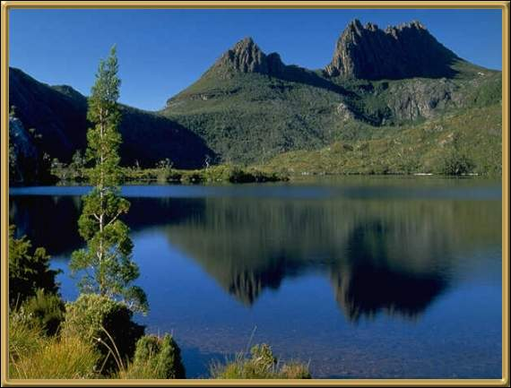

This is actually Dove lake which is a part of the Cradle Mountain Lake St Clair National Park. The park itself has some of Australia's best known walking tracks, including the Overland Track, and covers some of Tasmania's highest country. Originally Lake St Clair and Cradle Mountain were two separate reserves but they were unified in 1947 and the park now has a total area of some 336,000 acres.
Photographer: Unknown